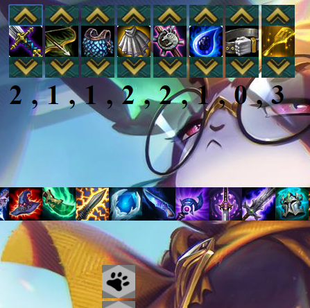

Hello, welcome to my homepage! My name is Huan. I am a recent graduate of San Diego State University. My passion lies in building software that aids and improves everyday life. I have written software and made prototypes for TheSmartGuider,
a company focused on creating devices that aid the visually impaired. If you would like to contact me, my information is displayed below.
Hello, welcome to my homepage! My name is Huan. I am a recent graduate of San Diego State University. My passion lies in building software that aids and improves everyday life. I have written software and made prototypes for TheSmartGuider,
a company focused on creating devices that aid the visually impaired. If you would like to contact me, my information is displayed below.
Email: Huankun.Liang@outlook.com
Phone: (619)-621-1705
Personal Projects
 Wake up to facts in the morning, or whatever time of day it is on a paper-like display. The E-ink Clock was built like any other digital alarm clock, but with trivia facts in mind. It's a great way of getting random information when checking the time.
The display emits no light so it may help to cut back on harmful lights from modern displays. The Raspberry Pi 3 and a Waveshare 4.2in e-ink display was used to create it. Further plans include adding recent news and weather to it.
Wake up to facts in the morning, or whatever time of day it is on a paper-like display. The E-ink Clock was built like any other digital alarm clock, but with trivia facts in mind. It's a great way of getting random information when checking the time.
The display emits no light so it may help to cut back on harmful lights from modern displays. The Raspberry Pi 3 and a Waveshare 4.2in e-ink display was used to create it. Further plans include adding recent news and weather to it.
 The Command Prompt Ticker was built to keep organize. Command Prompt often gets buried in application windows especially when working on a GUI or a website. Having access to Command Prompt through a small rectangle on the bottom of the screen
helps with productivity. It was made with Python's Tkinter and subprocess libraries.
The Command Prompt Ticker was built to keep organize. Command Prompt often gets buried in application windows especially when working on a GUI or a website. Having access to Command Prompt through a small rectangle on the bottom of the screen
helps with productivity. It was made with Python's Tkinter and subprocess libraries.

On June 2019, Riot Games launched TeamFightTactics, a strategy game that now has over 33 million monthly players. In the game, there are items that combine to form new items. The problem is, there are so many items a single player can hold
that it becomes difficult to know what combinations are available. This web app was designed to solve this problem by listing all possible item combinations based on the items the player owns. It also includes helpful guides and tools to better
optimize gameplay. The web app was designed with HTML, CSS, and JavaScript.
The app can be found here: https://condescending-stonebraker-b6927c.netlify.com
Work Experience
TheSmartGuider is a company focused on creating devices that aid the visually impaired. One of these devices is a self guiding cane created to take the visually impaired from point a to point b safely. It uses computer vision to access its
environment and makes a decision as the where to go. Object avoidance is key to this cane so having multiple sensors that work with each other is crucial. I was tasked with prototyping this cane and worked on the ultrasonic sensors part of it.
Teamwork and organization were some of the many lessons I had learned from this job.
Here is a link to the company website: http://livingbeyondthelabel.net/index.php/meet-the-developers/
School Work
 Independent Component Analysis is a technique used to separate mixed signals. It assumes the component signals are independent from one another and that they are non-gaussian. Applications include separating EEG signals and voices from audio.
I was tasked with separating mixed audio signals using this technique using Matlab.
Independent Component Analysis is a technique used to separate mixed signals. It assumes the component signals are independent from one another and that they are non-gaussian. Applications include separating EEG signals and voices from audio.
I was tasked with separating mixed audio signals using this technique using Matlab.
More information: here
Hidden Markov Models have been used to predict the future given a pattern. Models are created and analyzed by 3 algorithms:Forward, Viterbi, and Baum-Welch. I had programmed all three algorithms in Matlab.
More information: here
Bilinear Interpolation is one of many techniques used to resize an image. It does so by spreading out pixels of the image and filling in the gaps with new pixels generated based on the distance to the non-generated pixels.
This assignment was written in Matlab
More information: here